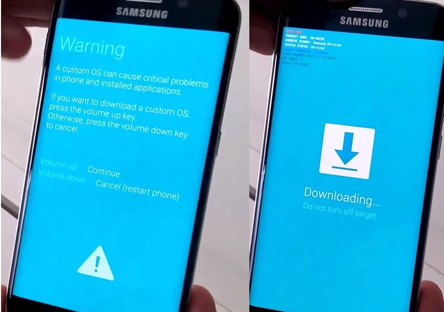

A lo largo de lo poco que he vivido he podido ver en lo que soy bueno y aqui te explicare cuales son:
Desde que he estado pequeño siempre me ha interesado dibujar y me preguntaba como un lapiz y con imaginación se podia hacer eso, bueno cuando estaba en la escuela aproximadamente en 6to grado habia una clase de dibujo, esa clase me gustaba y mucho porque a pesar de que me gusta dibujar nunca lo practicaba y con esa clase descubri que a pesar de tener poca experiencia me quedaban bien, cuando terminaba los dibujos mi familia los miraba y pues yo al esuchar eso me motive mucho, a tal punto que tenia un cuaderno solo para dibujar, dibujaba mayormente personajes de "ANIME", y a pesar de que no me gustara el anime en ese tiempo me gustaba la forma en como los japoneses los hacian, pero deje de dibujar porque despues de un tiempo ya no se me hacia interesante, y se podria decir que no he vuelto a dibujar desde hace 5 años.
Esta es una imagen sacada de google no me pertenece, pero lo que mayormente dibujaba cuando estaba pequeño era a Pikachu
En la Tecnologia tengo la habilidad de que se me hace faciles algunas cosas digamos le puedo instalar cosas a telefonos como un software que es de otro pais los puedo desbloquear por si se te olvido la contraseña, y me gusta cuando algunos telefonos son más dificiles que otros ya que me gustan los desafios, cuando estaba de vacaciones un dia me trajeron uno y estuve desde las 8 P.M hasta las 3 A.M me costo pero despues de estar casi 8 horas aprendi como eran los pasos para hacer lo que ocupaba y creo que fue gracias a esto que me meti a la carrera de INFO porque aqui hacen lo que me gusta como programar, hacer diseños y aprender más sobre como estan hechas algunas cosas
Aqui exactamente no encontre en Google lo que yo hago a la hora de arreglar telefonos o computadoras, pero algunas que si son parecidos son:
